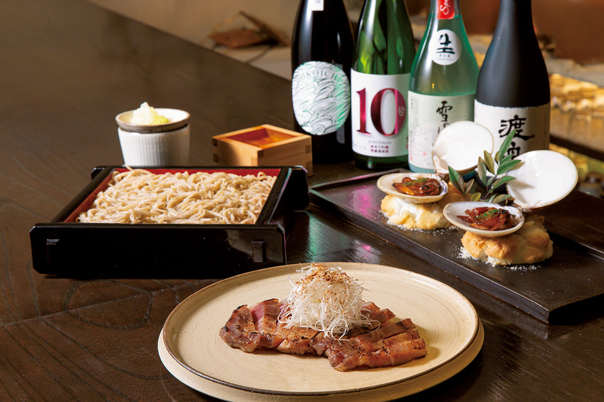
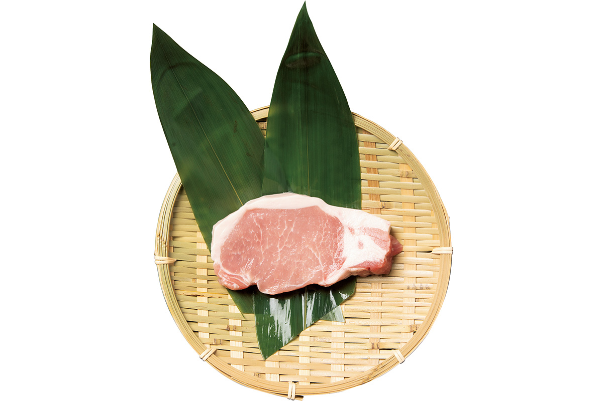
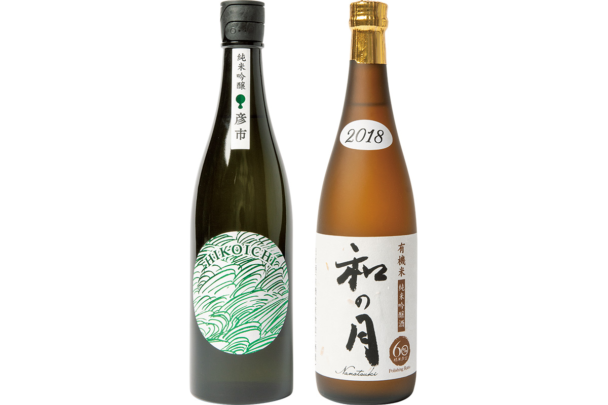
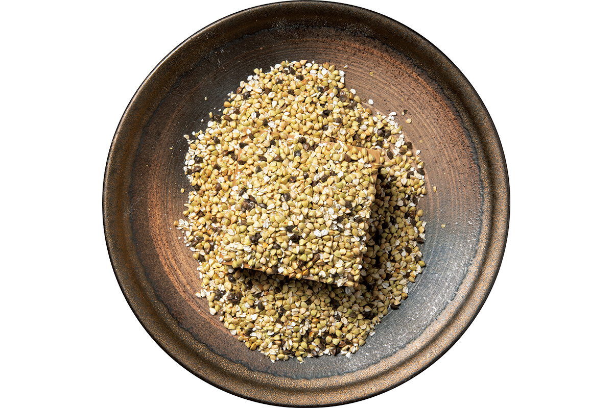
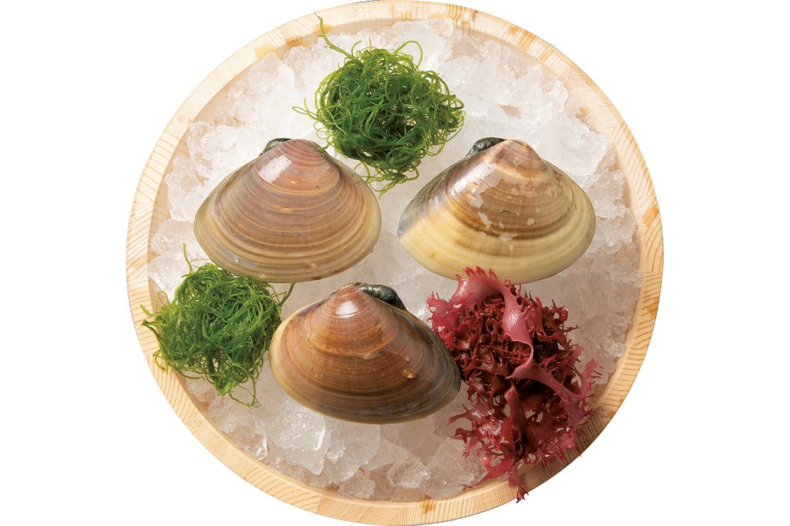

Префектура Ибараки · Мито и Оараи · еда и сакэ
Зимний стол Ибараки: свинина, гречка, хамагури и сакэ из портового Оараи

Префектура Ибараки лежит совсем рядом с Токио, самым большим рынком страны, и круглый год кормит его рыбой, овощами и мясом. Зимой здесь стоит попробовать свинину, гречку, крупных моллюсков и сакэ из старых сакэварен.
Кладовая
Префектура, где многое «номер один»
У Ибараки широкие равнины и длинная береговая линия, и по многим продуктам префектура первая в Японии: здесь собирают больше всего корня лотоса и дынь и получают больше всего куриных яиц. По сельскохозяйственной продукции в 2019 году Ибараки была третьей в стране, а на центральном оптовом рынке Токио её овощи и фрукты 16 лет подряд, до 2019 года включительно, занимали первое место по объёму. Плодородной эту землю считали и раньше: в «Хитати-но куни фудоки», описании провинции Хитати, составленном в VIII веке, она названа идеальной страной.
Богатство здешней кухни держится и на сильных производителях. Ибараки славится не только объёмами, но и марочными продуктами, и одним из первых это оценил местный исследователь еды, глава общества по изучению кулинарной культуры Ибараки. В 2002 году он открыл в Мито ресторан «Сюсю», где подают только то, что выращено и поймано в префектуре. Продукты он ищет сам, объезжая хозяйства, а местного сакэ в ресторане около ста видов.
«В Ибараки самая старая сакэварня Японии, а по числу сакэварен мы первые в регионе Канто. Море, горы и поля: здесь есть всё. Приезжайте в Ибараки за вкусом каждого сезона»
основатель ресторана «Сюсю»
В разгар зимы здесь особенно хорош морской чёрт. Тем, кто ищет хорошее сакэ и закуски к нему, Ибараки пропускать нельзя.
«Сюсю», главный ресторан
- Адрес
- префектура Ибараки, Мито, Дзёнан, 1-5-16, здание «Дайни Ёсидзуми», 1-й этаж
- Телефон
- +81 29-302-1103
Свинина
«Хитати-но кагаяки»: имя дают лучшим

«Хитати-но кагаяки» это помесь трёх пород, отцом в которой служит хряк линии «Роуз D-1». Марка появилась в продаже в декабре 2018 года. Вкус свинины определяет жир, а жир определяет корм, поэтому свиней растят на особом корме, и это название получает только мясо, прошедшее строгий отбор. Мясо мраморное и мягкое, с хорошим ароматом и вкусным жиром.
Одно из хозяйств, где растят таких свиней, это ферма «Сангоку» в городе Омитама.
Сакэ
Tsukinoi: сакэ портового Оараи

Сакэварня Tsukinoi работает в портовом городке Оараи с 1865 года. Её главная марка тоже называется Tsukinoi: этим сакэ издавна отмечали выход рыбацких лодок в море и их возвращение. Любят здесь и Nanotsuki из органического риса, выращенного без пестицидов: весь путь от шлифовки риса до розлива по бутылкам проходит по правилам органического производства. Третья известная марка, Hikoichi, сделана целиком на месте, из риса и воды Оараи руками местных мастеров.
При сакэварне есть магазин, где продают её сакэ, сезонные новинки и продукты из того, что остаётся после варки. Экскурсий по сакэварне в 2026 году не проводят.
Tsukinoi Sake Brewery
- Адрес
- префектура Ибараки, Оараи, Исохама, 638
- Телефон
- +81 29-266-2168
- Часы работы
- магазин 9:00–17:00 (по данным официального сайта, 2026 год)
- Сайт
- tsukinoi.co.jp
Гречка
«Хитати аки соба»: лучшая гречка страны

«Хитати аки соба» выросла из местного сорта, который префектура Ибараки в 1985 году утвердила как рекомендуемый. Зёрна у неё крупные и одинаковые, а лапша из неё сладковатая и ароматная. За качество её ценят мастера и знатоки лапши, и среди японской гречки она одна из самых дорогих. В Ибараки лапшу обычно макают в кэнтин-дзиру, горячий суп с овощами.
Моллюски
Хамагури из моря Касиманада

Японские хамагури редки: на них приходится всего десятая часть всех продаваемых в стране моллюсков этого вида, и восемь десятых из этой доли дают воды Ибараки. Хамагури из Касиманады, моря у побережья Ибараки, крупные, упругие и заметно сладкие. Три рыболовецких кооператива, в Оараи, на побережье Касиманады и в Хасаки, ведут промысел вместе и по плану, чтобы моллюсков хватило и в будущем.
Рыболовецкий кооператив Оараи
- Адрес
- префектура Ибараки, Оараи, Исохама, 8253-10
- Телефон
- +81 29-266-2165
Фото: Кадзуя Хаяси.